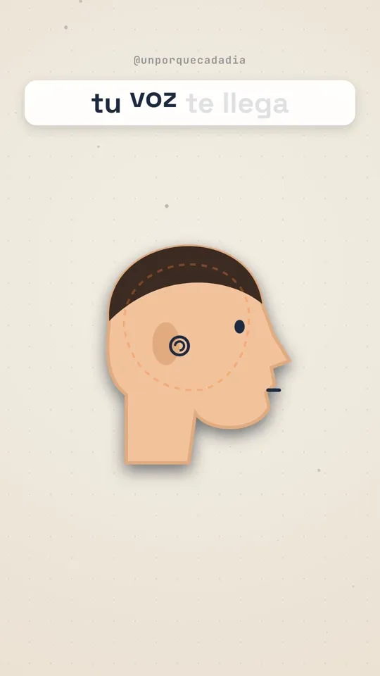
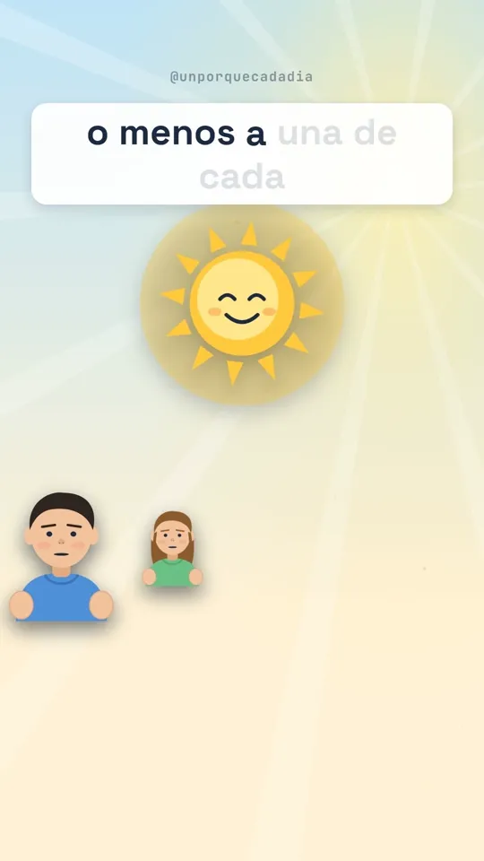
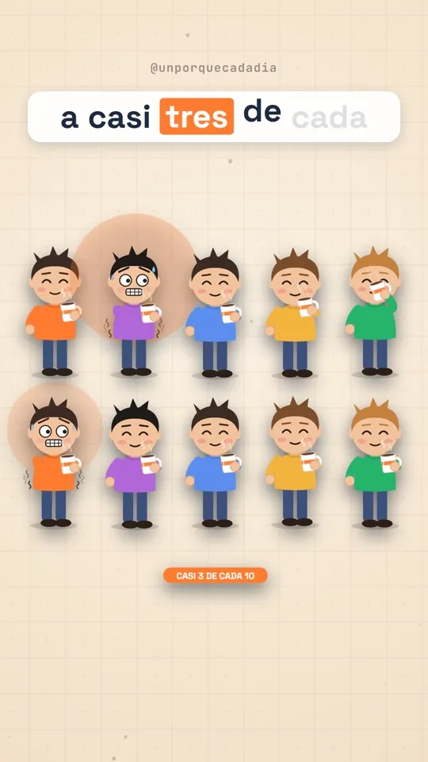

Publicador
It takes each finished video from its folder to Instagram, TikTok and YouTube Shorts. One person uses it, for their own accounts only.
Every video lives in its own folder, with the video and its caption. Publicador reads it and uploads it to the right network.
See how it works


First, the video's folder
Once a video is finished and reviewed, it sits in its own folder with two files: the video and the caption that goes with it.
PS> ls publicar\014-por-que-la-bateria-pasa-del-20-al-1
video.mp4 21.3 MB 1080 × 1920
descripcion.txt 684 characters
Three brands
- Instagram @unporquecadadia
- TikTok @unporquecadadia
- YouTube @unporquecadadia
Data
Publicador has no server and no online database. Everything it keeps is on the computer of the person who uses it. Privacy →
Questions
What is Publicador Videos?
A personal tool, with no public interface, that uploads three brands' finished videos to their own Instagram, TikTok and YouTube accounts.
Can anyone else use it?
No. There is no sign-up and there are no outside users: it only works with its brands' accounts, which have expressly granted permission.
Does it post anything unreviewed?
No. Every video is reviewed first and only posted with an explicit command. On TikTok not even that: it arrives as a draft and is posted by hand in the app.
Where are the access keys kept?
On the computer of the person who uses it, in a folder outside any project or repository. They are never uploaded or published.
Does it keep other people's data?
No. It only handles data about its own accounts: their ID, their username and the access keys.
Which permissions does it ask for?
Instagram: read the basic profile and publish content. TikTok: read the basic profile and send videos to drafts. YouTube: upload videos to the channel.
How is an account disconnected?
Permission can be revoked on each network at any time; the privacy page explains where. Once revoked, the key stops working immediately.
Does this website use cookies?
No. No cookies, no analytics, no third-party fonts or scripts. Everything you see is served from here.
Write to the operator
For questions about the tool, the data, or revoking a permission. Your email app will open with the message ready.